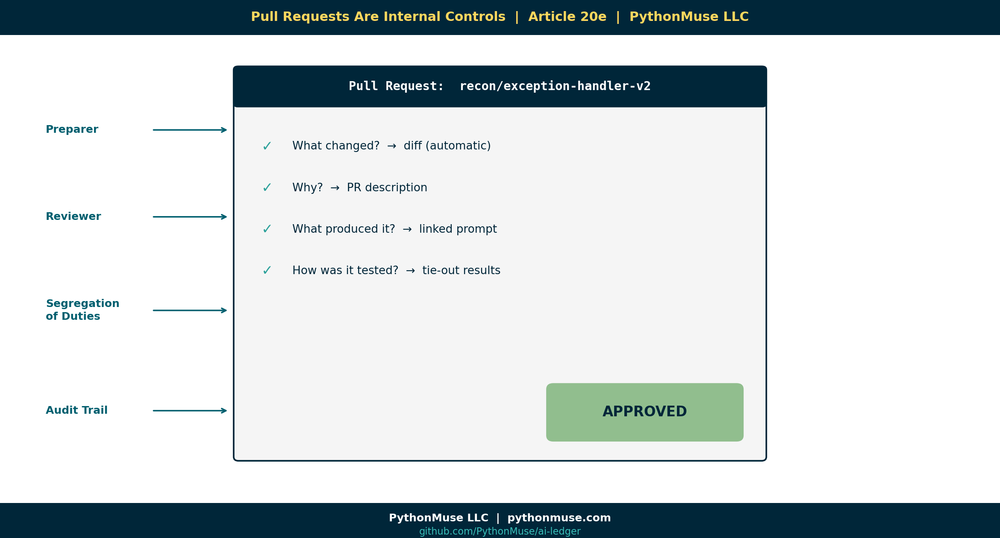

20e — Pull Requests Are Internal Controls
~7 min read · Part 5 of 6 in Version Control for Accountants in the AI Era
PythonMuse LLC Series launch · 2026

The Most Misunderstood Word in This Series
"Pull request" is the worst-named good idea in software.
It is not a request to pull anything. Nobody pulls anything. It's a review-and-approval workflow with a confusing name.
Here is the entire concept in one sentence:
A pull request says: "I'd like to make this change. Please review it before it becomes part of the official record."
Now translate that into accounting:
"I'd like to post this JE. Please review the supporting documentation before it hits the GL."
You already know how this works. You've been doing it for decades. Software just gave it a weird name.
The Accounting Control That Was Always There
| Accounting Control | Git / GitHub Equivalent |
|---|---|
| Preparer / reviewer split | Author writes commits, reviewer approves PR |
| JE support review | Code & data diff review on the PR |
| Segregation of duties | Branch protection ("nobody can self-approve") |
| Approval evidence | PR comment thread, recorded forever |
| Sign-off | "Approve" click on the PR |
| Audit trail | The merge commit, linked to author + reviewer |
| Reversal / correction | A new commit on a new PR (history preserved) |
If you've ever signed off on a recon, you've already done the human work of a pull request. The PR is the same workflow with the paperwork built in.
Why This Matters For AI
Here is the new risk:
An AI agent can generate a "finished" reconciliation script in 90 seconds. It will look correct. It will run. It will produce numbers.
Without a review step, that 90-second output becomes Monday's deliverable.
That is AI without a control.
The pull request is how you re-insert the human:
- The agent (or analyst) makes the change on a branch.
- A pull request is opened automatically.
- A reviewer must approve before the change is merged.
- The PR records who reviewed, what they reviewed, and what they said.
Now your AI workflow has:
- A preparer (the AI or analyst).
- A reviewer (the human).
- Evidence of the review.
- A timestamped approval.
You just rebuilt segregation of duties in a digital workflow.
Branch Protection = "Nobody Can Self-Approve"
GitHub has a setting called branch protection that enforces the rule every accountant already lives by:
"You cannot approve your own work."
You turn it on once. After that, the system itself blocks anyone — including a senior person, including the CFO, including the AI agent — from merging their own change without a second pair of eyes.
This is not red tape. This is a digital internal control, enforced by the platform instead of by hope.
What a Good PR Looks Like (For Finance)
When AI generates a new reconciliation script, the PR should answer four questions before anyone clicks "Approve":
- What changed? (The diff — automatic.)
- Why? (The PR description — written by the author.)
- What did the AI produce, and what prompt produced it? (Linked from
prompts/.) - How was it tested? (Test outputs, sample numbers, tie-out to a known answer.)
If those four questions can't be answered, the PR doesn't get merged.
That is your control.
Tie This Directly To COSO / ICFR / AI Governance
This is the part that should make controllers sit up straight.
The five COSO components map cleanly to PR mechanics:
| COSO Component | Pull Request Mechanic |
|---|---|
| Control Environment | Branch protection rules, written PR template |
| Risk Assessment | "What does this change affect?" section of the PR |
| Control Activities | Required approvals, required test results |
| Information & Communication | PR comments, linked tickets, linked prompts |
| Monitoring | Audit report of every merged PR over a period |
If your auditor has never asked about Git, they will. AI governance frameworks (the AICPA AI assurance guidance, the EU AI Act, NIST AI RMF) all eventually point to the same thing: show me the change log, the reviewer, and the approval evidence.
The PR is the cleanest way to produce that evidence on demand.
A Framework, Not a Tool
🛠️ Reminder — this is a framework.
Pull requests work identically in GitHub, Azure DevOps Repos, and AWS CodeCommit (which calls its review workflow "approval rule templates" but the user experience is the same). Pick the one your enterprise already governs. The control is the control.
Real Example, End To End
Monday, 9:14 AM. An AI agent regenerates the bank reconciliation script after a new exception type emerged.
9:15 AM. The change lands on a branch called
recon/exception-handler-v2. A pull request opens automatically with the diff, the prompt that produced it, and the test output.9:42 AM. The senior accountant reviews. Comments: "Tie-out matches April; approve."
9:43 AM. The controller approves.
9:43 AM + 2 seconds. The PR merges. The change is live. The audit trail is permanent.
Every step has a timestamp, an actor, and a written rationale.
That is what AI-era internal controls look like.
Demo Repo Snapshot
By Article 20e, github.com/PythonMuse/git-demo has branch protection enabled and at least one closed PR you can click into. You'll see the diff, the review comments, and the approval. It is short, real, and exactly what your team would do.
What's Next
History plus approvals gives you defensible change. The final article puts it all together into the vision: Article 20f — Reproducible Financial Reporting.
Related Reading
- AI in Accounting Is Not the Wild West
- AI Governance for Controllers
- When to Trust AI to Run Your Accounting Workflows (Audit-Ready)
- Zero Trust AI Accounting
Next in the Series
→ Article 20f — Reproducible Financial Reporting
A note on how this article was made. This article started with me. The PR-as-control framing came out of conversations with controllers who wanted AI but couldn't see how it would survive an audit. GitHub Copilot (Claude Opus 4.7) then built the final article and all visual concepts — working from my direction and feedback at each step. I reviewed every output, pushed back on things I didn't like, and made all final content decisions. That process — bringing your own experience, using AI to build and iterate, and staying in the editorial seat throughout — is exactly what this series is about.
By Svetlana Toohey